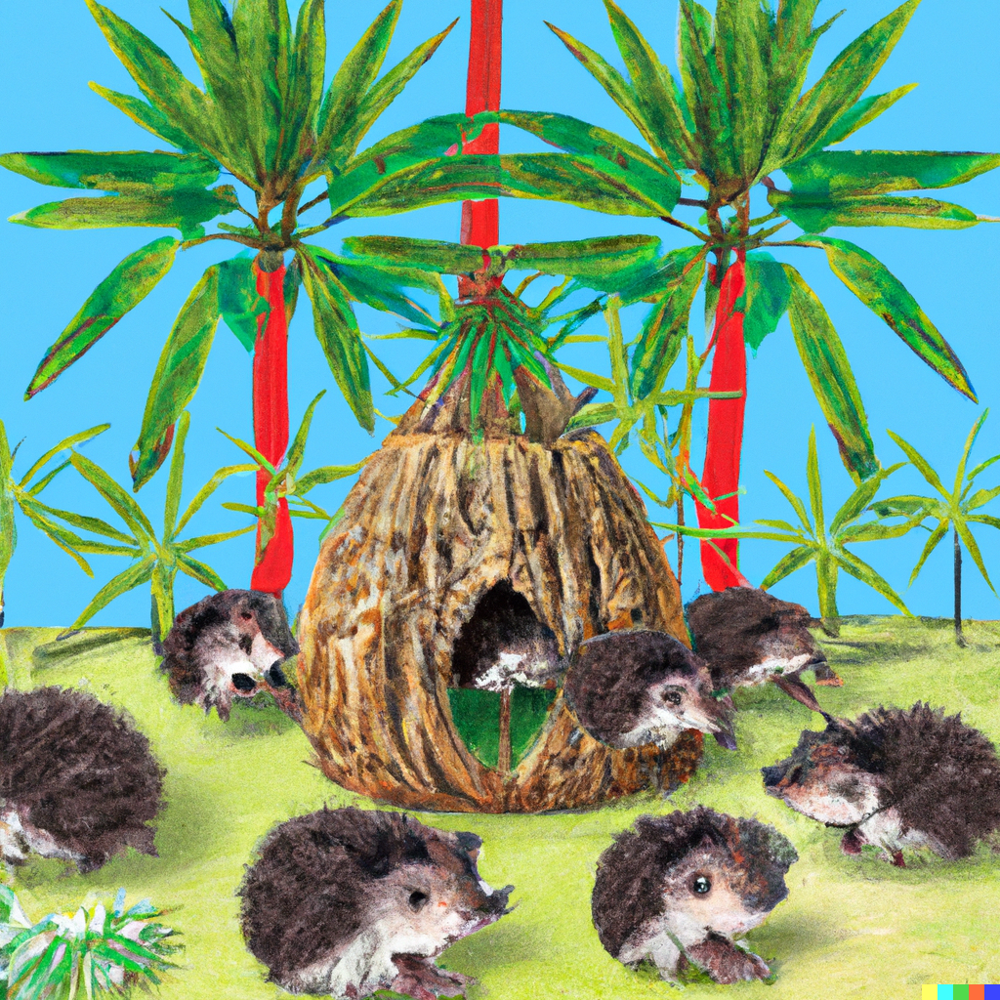

FLASH: Friends Learning About Some Hodge stuff + Survivor Season 46 Fantasy League
Schedule
Meeting Fridays, 4-5pm eastern talks, 5-6pm eastern problem solving.
Week 1: Real Hodge theory (1/26), Sidhanth Raman
Week 2: Complex Hodge theory (2/2), David Chan
Week 3: Kahler manifolds (2/9), Ben Spitz
Week 4: More on Kahler manifolds (2/16), Tommy Brazelton
Week 5: Smooth projective varieties (2/23), Zhong Zhang
Week 6: Families and monodromy (3/1), Brian Shin
Week 7: Abstract Hodge structures (3/8), Anubhav Nanavaty
Extra topics: Abelian varieties and polarized Hodge structures, (3/15), Natalia Pacheco-Tallaj
Break (3/22), since a lot of us will be traveling for Motives in Mainz and/or Mid-Atlantic Topology
Extra topics: Hodge theory of toric varieties, (3/29), Jordy Lopez Garcia
Extra topics: Motivic aspects of Hodge theory (4/5), Gabriela Guzmán
Extra topics: Mixed hodge theory (4/12), Anubhav Nanavaty
Extra topics: Arithmetic via Grothendieck-Lefschetz (4/19), Sidhanth Raman
Extra topics: p-adic Hodge theory Part I (4/26), Liam Keenan
Extra topics: p-adic Hodge theory Part II (5/3), Liam Keenan